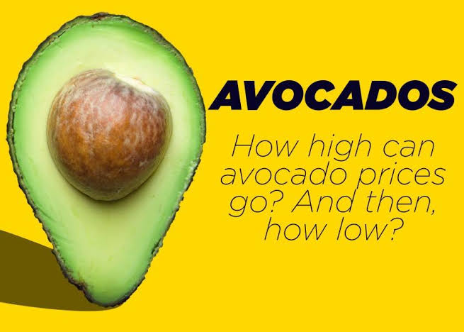
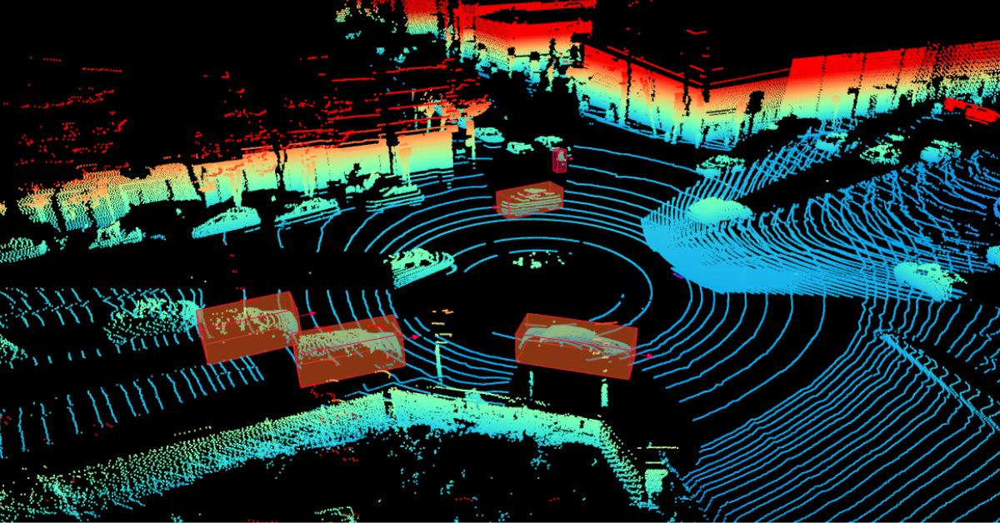

This analysis examines avocado price trends from 2015 to 2023, uncovering seasonal variations, long-term trends, regional disparities, and correlations with factors like weather patterns and consumer demand.

This project demonstrates a classification model deployed as a web app using Streamlit. It covers data loading, preprocessing, model training, evaluation, and deployment for a hands-on NLP experience.

Developed a collaborative and content-based recommender system for anime titles, accurately predicting user preferences and enhancing engagement through the Fusion-X Network app.

Analyze Airbnb listings in Athens via Tableau dashboard, detailing neighborhood distribution, pricing trends, and occupancy rates to inform traveler decisions and host strategies.

Interactive dashboard showcasing house sales in King County, Washington, highlighting average sales prices from 2014 to 2015 for market analysis.

Sleep and physical activity are critical components of human health and well-being. They significantly influence not only physical health but also cognitive function, emotional well-being, and overall quality of life.Using this dataset, we aim to draw actionable insights that can contribute to personalized health recommendations and better lifestyle choices.

Developing a model for height and segmentation data analysis using satellite images, critical for understanding radio frequency propagation in wireless networks.